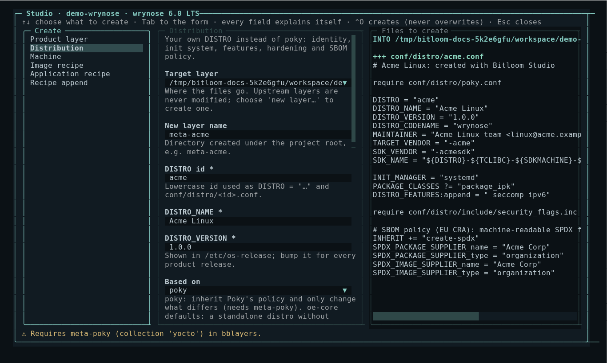
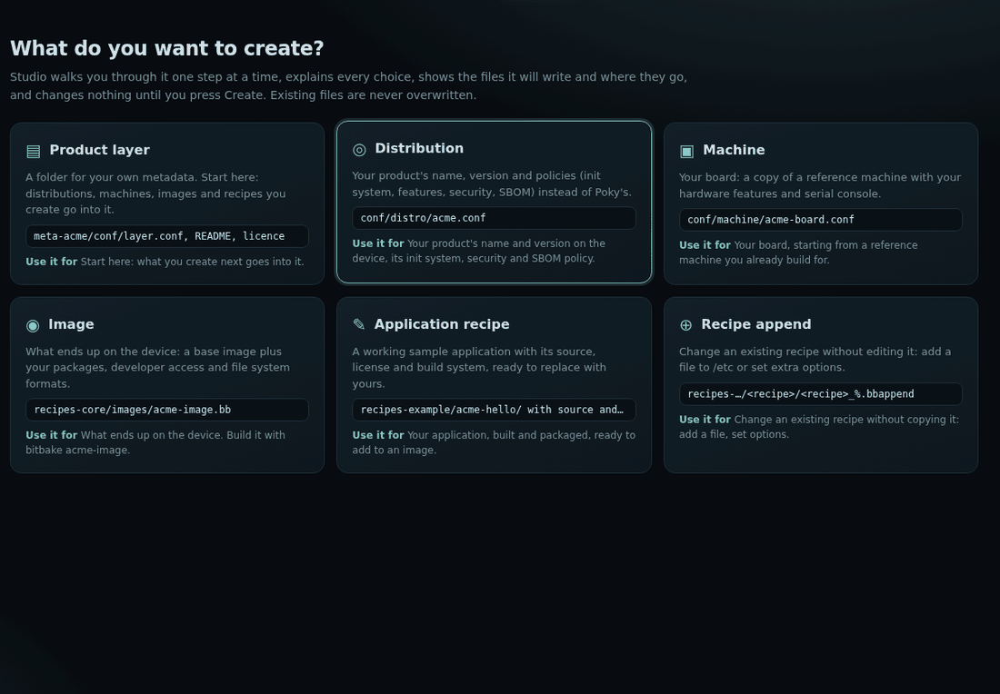
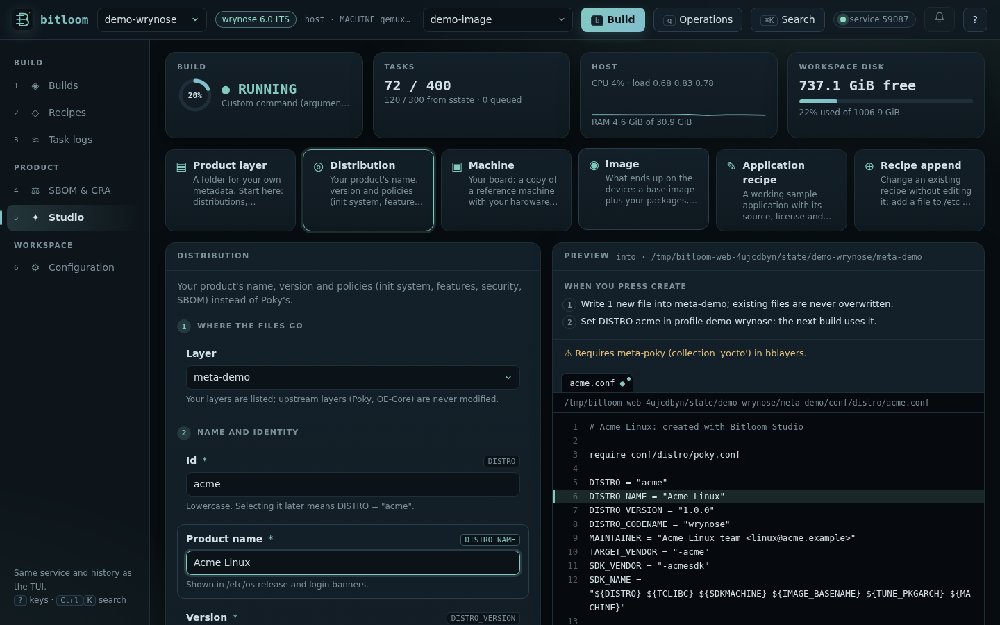

Studio
Studio creates the metadata of your own product: a product layer, your distribution instead of Poky, machines, images, recipes and appends. Defaults follow the detected Yocto release, and you see every file, and everything Create will do, before anything is written.
Open it with Recipes → c in the TUI, Ctrl+P → Studio, or section 6 of the web dashboard.
Screenshot Studio creating a distribution on Wrynose

The web Studio: one step at a time#
In the web dashboard (section 6) Studio is a guided path, not an editor:
- What do you want to create? Six cards: product layer, distribution, machine, image, application recipe, recipe append. Each says what you get (for example
recipes-core/images/acme-image.bb) and what it is for. - The steps follow the form's sections: Where the files go, Name and identity, What goes in, Policies. One step is shown at a time; Next (or Enter in a text field) and Back move between them, and the step list on the left marks steps done (✓) or with a problem (!). Any step can be reopened from the list.
- Where it goes (right): the layer and only the folders the new files go into, with the files already there for context and the new ones marked new; below, the content of every file Create will write, highlighted. Focusing a field highlights the lines it writes. To change the generated text yourself, switch on edit before creating; the tab is then marked as edited and Create writes your version. While you type, the BitBake assistant completes variables, classes, overrides and values from your layers and shows the problems a parse would hit.
- Review and create: your choices, exactly what Create will do (files, kas overlay or
bitbake-layers add-layer, profile changes) and any problem to fix. Create (or Ctrl+Enter) writes the files; nothing is written before. - What next: the actions that make sense now: build the new image or recipe, make it the build target, rebuild the recipe an append changes, add a distribution or an image to a new layer, see the files in Recipes, or create something else.
Existing files are never modified or overwritten, and upstream layers are never written to. Esc goes back to the list.
Animation Studio: choosing an image, walking its steps, the review

Screenshot A step of the Image path, with the field's line highlighted in the preview

How the form reads#
The form is split into numbered sections: Where the files go, Name and identity, What goes in and Policies. Each field has a plain label; the BitBake variable it sets is shown next to it (for example Product name · DISTRO_NAME), so the form is readable without knowing Yocto and still tells experts exactly what is written.
- Choices explain themselves. Under a drop-down, a line says what the selected option means (systemd: full service manager; default from Wrynose). Feature chips show their meaning on hover or focus, and the line under them lists what is selected. Help that quotes an example follows what you type (You build it with: bitbake gateway-image).
- The preview follows the field. Focusing a field highlights the lines it writes and switches to the file that contains them.
- Errors point at the field, mark its step with ! and are listed in the review; Create stays disabled until they are fixed.
- No layer of your own yet? The Layer field says so: a new layer (default
meta-acme) is created together with the files, shown as new layer in Where it goes. The layer choice is kept when you switch between kinds.
In the TUI (Recipes → c) the same form and plan appear in one dialog: kinds on the left, the form in the middle, the steps and the files on the right.
What you can create#
| Kind | Files | Notes |
|---|---|---|
| Product layer | conf/layer.conf, README.md, COPYING.MIT |
Collection, priority, LAYERDEPENDS, LAYERSERIES_COMPAT from the detected release |
| Distribution | conf/distro/<id>.conf |
Based on Poky (require conf/distro/poky.conf) or standalone OE-Core defaults; DISTRO_NAME/VERSION, MAINTAINER, vendors, INIT_MANAGER, DISTRO_FEATURES to add and remove, package format, security_flags.inc, SBOM policy with the supplier |
| Machine | conf/machine/<id>.conf |
Derived from a reference machine (require + MACHINEOVERRIDES), MACHINE_FEATURES, SERIAL_CONSOLES, preferred kernel |
| Image | recipes-core/images/<name>.bb |
inherit core-image or extend an existing image, IMAGE_FEATURES, packages, IMAGE_FSTYPES, extra space |
| Application recipe | recipes-example/<name>/… |
Licensed sample with CMake, Meson, Make, Python or Rust sources |
| Recipe append | recipes-*/<recipe>/<recipe>_%.bbappend |
FILESEXTRAPATHS, an installed file, extra assignments |
Release-dependent choices are applied for you:
INIT_MANAGERdefaults to systemd on Wrynose, which made it the default.- The image developer-access features follow 5.1:
debug-tweakswas split intoallow-empty-password,empty-root-passwordandallow-root-login; Studio refusesdebug-tweakson 5.1 and later. - Appends read files from
UNPACKDIRon 5.1 and later,WORKDIRbefore. - The SBOM supplier uses
SPDX_PACKAGE_SUPPLIER/SPDX_IMAGE_SUPPLIERon SPDX 3 releases andSPDX_SUPPLIERon SPDX 2.2 releases.
Where files go#
Choose an existing product layer (upstream layers such as meta, meta-poky and fetched repositories are never offered) or new layer…. Studio writes only inside the project root or KAS_WORK_DIR, refuses any file that already exists and writes all files or none.
Registration#
| Profile | After creation |
|---|---|
| host, container | A new layer is registered with a queued bitbake-layers add-layer. For a distribution or machine, Use for this profile sets the profile's DISTRO/MACHINE. |
| kas, kas-container | Studio writes kas-studio-<layer>.yml (the new layer as a repository plus distro:, machine: or target:) and appends it to the profile's kas_file. Team profiles are not modified: clone them first. |
| wrapper | The overlay is written; add it to the configuration your launcher passes to kas. |
Images and recipes set the build target, so b builds them next.
Keyboard#
↑/↓ choose the kind, Tab moves through the fields (the preview follows), Space toggles list entries, ^O creates, Esc closes. In the web dashboard the kinds are cards, chips toggle with Enter/Space, and file tabs switch the preview.